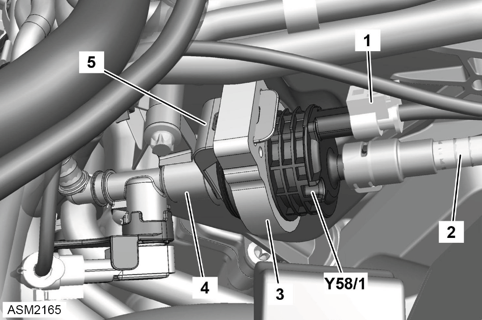

Purge Solenoid Valve - 4 Cylinder
Print
Operation Code: 43.03.13-02
Removal
- Remove engine cover. Refer to procedure.

- Disconnect harness connector (1) from purge solenoid valve (Y58/1).
- Release quick connector (2) and disconnect purge line from purge solenoid valve.
 CAUTION: Do not crush, kink or subject purge line to tension.
CAUTION: Do not crush, kink or subject purge line to tension.
NOTE: Pinch the two buttons on quick connector and pull to remove.
NOTE: Plug quick connector to prevent ingress of dirt.
- Release purge solenoid valve with decoupling element (3) from purge line (4) and bracket (5).
NOTE: Plug purge line to prevent ingress of dirt.
- Remove purge solenoid valve.
Installation
- Installation is the reverse of removal procedure except for the following:
NOTE: Push quick connector until an audible click is heard.
- After installation perform a diagnostic read and clear error memory using Lotus Insight tool.